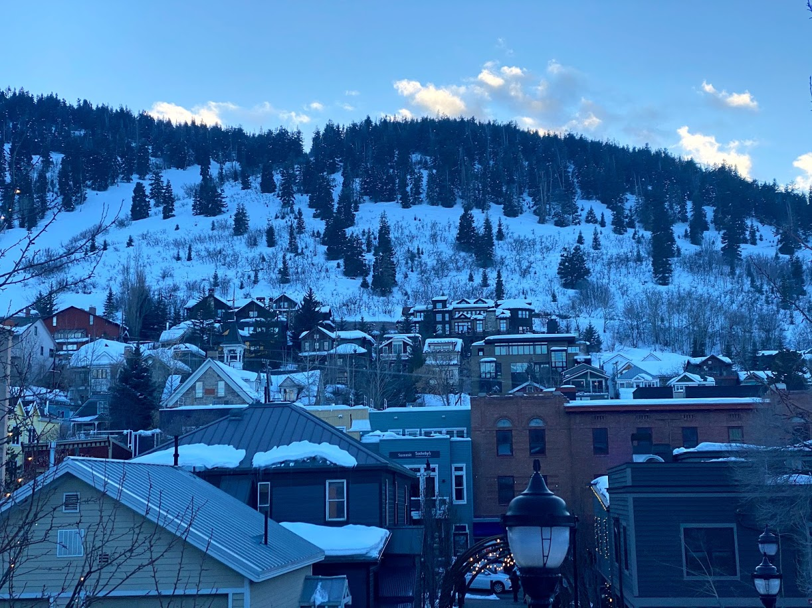

I spent five days in Park City, Utah at the 2020 Sundance Film Festival.
I don’t work in the film industry -- I’m a founder of a gaming startup in San Francisco. But, I love films and creative communities. My friend told me Sundance provides both in spades, so I decided I had to go.
I had high expectations going in. By the end of the second day, they’d been knocked out of the park.
Here’s why.
Park City is an ideal venue
I wasn't familiar with Park City before Sundance. I knew it was within driving distance of Salt Lake City. My friends told me it’s a world-renowned ski destination. I don’t really care about skiing, so in my head it was just a tiny town of 7,000 residents.
As soon as I arrived I was struck by how gorgeous it is:

Park City is a winter wonderland. It feels otherworldly, like films.
The city’s smallness makes the festival feel cozy. There aren’t many standalone theaters in the city. Sundance organizers have to convert libraries, hotel lobbies, and basketball courts into screening areas for the duration of the festival.
The city is also frigid. Average lows were 15 degrees Fahrenheit. If you don’t ski, you don’t miss being outside. People are bundled up the entire day in hats, scarves, puffer jackets, and gloves. They’re focused on staying warm, not looking cute.
Watching films is the perfect activity in these conditions.
A story-obsessed community
Unlike in San Francisco, I felt like a shiny toy as a tech entrepreneur amongst the film crowd. All of the directors, producers, screenwriters, and actors I met (courtesy of Woodside) engaged with my questions. Why does it take so long to make a movie? (Fundraising is hard). Why aren’t indie films more popular? (Nobody’s cracked distribution). Why aren’t more films shot entirely on an iPhone? (Hmm, not sure...).
Every industry has a social currency. People who possess the currency command disproportionate attention at social gatherings. In most industries this currency is either (1) money or (2) relationships with power brokers. While both of these surely hold value in the film industry, I got the sense the creativity of your story and your ideas is more valuable. Do you have a new perspective? Do you ask provocative questions? How are you unique?
Having good answers to these questions makes you fun at Sundance parties. At least more so than it would in modern Silicon Valley.
I love this currency because it’s more equitable to attain. It levels the playing field for outsiders.
With that being said, Sundance is an industry festival. Lots of attendees had explicit goals for the week. Secure funding for a film. Land an acting role. Find collaborators. That being said, people (especially directors and producers) were refreshingly open about these goals while maintaining a sense of play and creativity. They danced between banter and business quite well.
But enough about Park City and the people. Let’s get on to the films.
The big picture
Again courtesy of Woodside, I got tickets to almost everything I wanted to see. Every screening was sold out, and nearly every one had the director stick around afterwards for a 10 minute Q&A. Fellow moviegoers were chatty after the showings, eager to debrief what they had just seen. The whole thing was a film lover's dream.
I’ve written brief reviews of the films at the end of the post.
Below are four takeaways from what I saw:
1. Distribution is hard for indie films. There are so many high quality indie films being made that don’t get wide release. Documentaries, shorts, international films, dramatic films, animated films -- you name it. Streaming services have expanded the number of films people can see, but they still stick to films that have “mass market appeal”. I wish there were more ways for more people to see indie films. I think many of these films would build a loyal (and profitable) following if the right distribution channels existed.
2. Bring on the shorts. Short films (15 to 40 minute films) are perfect for short attention spans. They’re also great for experimenting with new styles and stories on a low budget. Some of my favorite films at Sundance were shorts, like Junior Bangers, Do Not Split, and Church and the Fourth Estate. Streaming services are experimenting with miniseries in which each episode is a standalone story (e.g. High Maintenance). However, I can’t think of any online or physical destination I can attend to watch a bunch of high quality short films. I think if a “Netflix for shorts” existed it would be extremely popular.
3. Most films I saw were pessimistic. Perhaps this reflects our mood in 2020. They were great films, but I wish we were telling more optimistic stories too. I believe one purpose of a great film (and great art more broadly) is to inspire us and uplift us. After all, the stories we tell, read, and see shape our mood.
4. Asian films are having a moment. Minari, a film about Korean American immigrants in the 1980s, swept both audience and critic awards (unfortunately I didn’t see it). Films like The Farewell and Parasite and now Minari prove Asian films can garner critical acclaim. As an Indian American, I’m pumped and wondering when award-winning Indian stories will be told.
A big thank you to Shuhan He for housing me, the Woodside community for being so welcoming, Jennifer Lee for orchestrating the whole thing, and Debbie Lai for introducing me to Sundance.
If you have any thoughts, comments, or ideas based on anything I shared, please
reach out via Twitter and let’s discuss!
Film reviews
I’d recommend watching everything rated 4 stars or above.
The Social Dilemma: 3 stars. Documentary about social media addiction. I’m glad we’re having the discussion, but I was disappointed it wasn’t more nuanced. The fact that so many audience members were shocked their kids were addicted to social media alarmed me.
Dick Johnson is Dead: 5 stars. Documentary following the last two years of the filmmaker’s father’s life. Its tone felt unique: equal parts joyful, wistful, and hilarious. The film raised important questions around how we treat the elderly and regard death in the U.S.
Saudi Runaway: 5 stars. Documentary first-person account of a woman named Muna plotting her escape from Saudi Arabia. The director met Muna online a few months prior to her escape and taught her how to shoot footage on a smartphone.
The Nest: 3.5 stars. Drama about a marriage going awry after a cross-continent move. The characters were one-dimensional and evoked little empathy. A far cry from Marriage Story. Great cinematography, though.
Church and the Fourth Estate: 4.5 stars. Documentary short about the press and legal battles surrounding the first Boy Scouts sexual assault case. Raised two thought-provoking questions. How do you both care deeply for an institution while exposing its dark underbelly? How do we revive local journalism?
Palm Springs: 4 stars. Rom com with a twist. I hate formulaic rom coms, but I love ones that subvert the genre. I won’t spoil it here. Palm Springs is absurd, philosophical, and absurd. It’s also gorgeously shot.
Do Not Split: 4 stars. Documentary short about the Hong Kong protests. The (Norweigian) director attended protests for months and stockpiled a ton of raw, front-line footage. Prior to watching the film, I didn’t realize how many Hong Kong natives supported mainland China.
Abortion Helpline, This is Lisa: 4.5 stars. Documentary short of counselors responding to calls at a Philadelphia abortion hotline. Endless barrage of women calling for financial help to cover abortion costs. Gut-wrenching look at how U.S. legislation bars abortion access for women who need it the most.
Junior Bangers: 5 stars. Documentary short of U.K. boys racing old scrap vehicles. Banger racing is rugged and dangerous. Yet, when it’s 11 year olds racing, there’s a softness to it. Great documentaries transport you into another world as well as the best fantasies and sci-fi flicks do.
Feels Good Man: 5 stars. Documentary about the rise of “Pepe the Frog”, originally a cartoon character and now a widely shared meme. Told through the eyes of Pepe’s creator, the film raised urgent questions. Who’s responsible for an innocent idea twisted into something grotesque on the internet? What moral obligations do artists have?
Nine Days: 5 stars. My favorite Sundance film. The premise is simple, yet profound: a world where once you die, you get to decide who’s born next. The cinematography, acting, and score are brilliant.
Wendy: 2 stars. Retelling of Peter Pan from Wendy’s perspective. Slow and serious, ironic for a film about childhood.